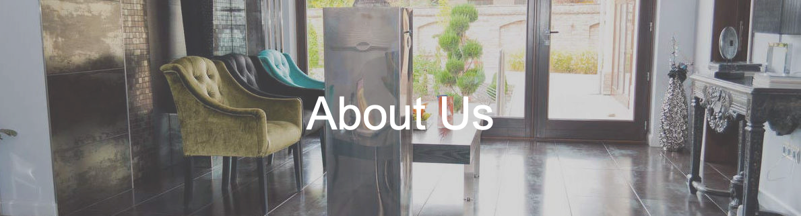

The Perfect Smile Implant Centre, one of Hungary's largest dental clinics, treats patients with
complex solutions to all dental and oral-surgical problems to the highest European standards.
We specialize in aesthetic dentistry and implantology. The tranquil atmosphere of our clinic combined with the
undivided attention and professional expertise of our staff will ensure that patients will have first class treatment.
The quality of our work is guaranteed by our modern Diagnostic system, Digital panoramic x-ray, CT scan facility.
The highest quality equipment, dental implements and material are used in the clinic.
The Dental laboratory is located in the clinic, ensuring the Technicians are available to the Dental team at all times.
All the materials including implants are supplied by world class, international suppliers.
The clinics Dentists and Oral surgeons are registered with the Hungarian Dental Council and many European Dental councils, including the UK.
The clinic have surgeries in Ireland and Italy.
All treatment is guaranteed in accordance with EU standards.
The clinic has been treating Irish patients since 2004. Because of the large number of Irish patients that have received
treatment, it was decided 7 years ago to open a surgery in Wexford for aftercare. A team travels from Hungary for 4 days
every month. The clinic also have a surgery in Ravenna, Italy.
In the Postoperative surgery in Wexford the Dental Team treat patients before and after treatment in Hungary.
Prospective patients can visit Wexford for a consultation in one of the two surgeries. The clinic recently installed a
modern Digital Panoramic x - ray machine in Wexford. It is linked to the clinic in Hungary. The Dentist in Wexford will
have access to all the patients' x - rays and treatment records.
Patient Reviews
"Very happy with treatment so far, The care is excellent and the staff are wonderful. Looking forward to my next visit."
"I would like to thank the team for my beautiful teeth. I'm over the moon with the work they have done."
"Delighted with my treatment, a massive thank you to all the team at the clinic: 5 stars, 110% happy!
Everyone went our their way to make sure I had a comfortable stay and everything I needed. I will be
recommending to anyone who needs a dental treatment."
"Excellent work done on my teeth. The staff were very nice and welcoming. They make you feel welcome and explain everything in great detail.
The Dentist did excellent work and i am 100% happy with the results. I would recommend this clinic to any
Irish person considering treatment in Hungary. The accomodation is good value and close to the town center."


{kind=link}
{kind=link}
{kind=link}
{kind=link}
{kind=link}
{kind=link}
{kind=link}
{kind=link}
{kind=link}
{kind=link}
{kind=link}